SQL Express telepítése
1. Telepítőkészletek letöltése // Downloading installation media
- Az SQL Szerver különböző változatai letölthetők innét
- Ha valaki még nem telepítette volna az SQL Server Management Studio-t, innét letöltheti.
2. SQL Express telepítése // Installing SQL Express
2.1 Telepítési mód // Installation type
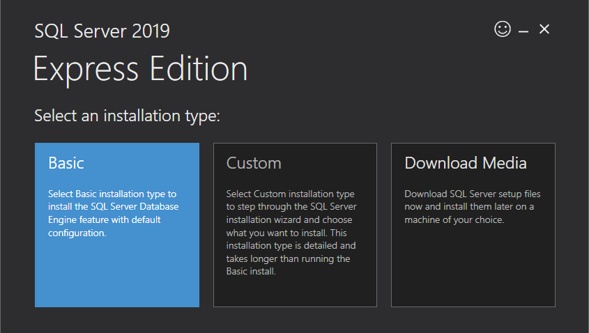 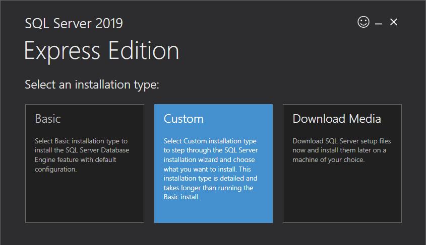
2.2 Letöltések helye // Download location
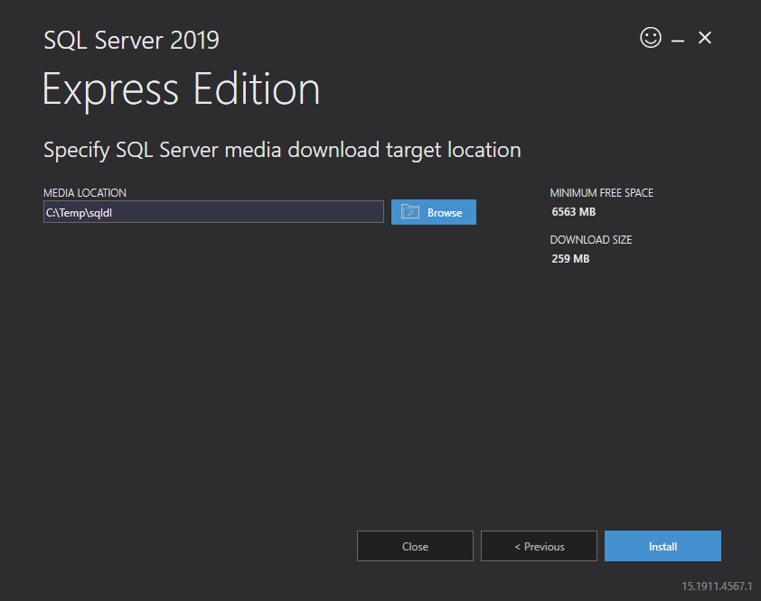
2.3 Fájlok letöltése folyamatban // Downloading install package
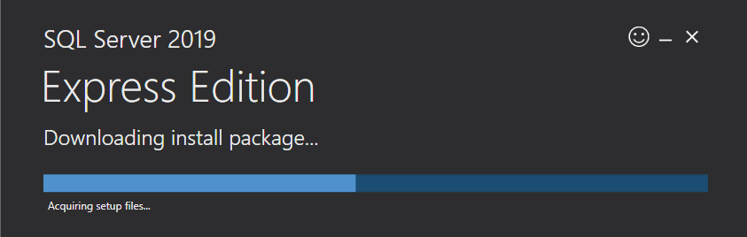
2.4 A telepítő elindult // Installation Center is launched
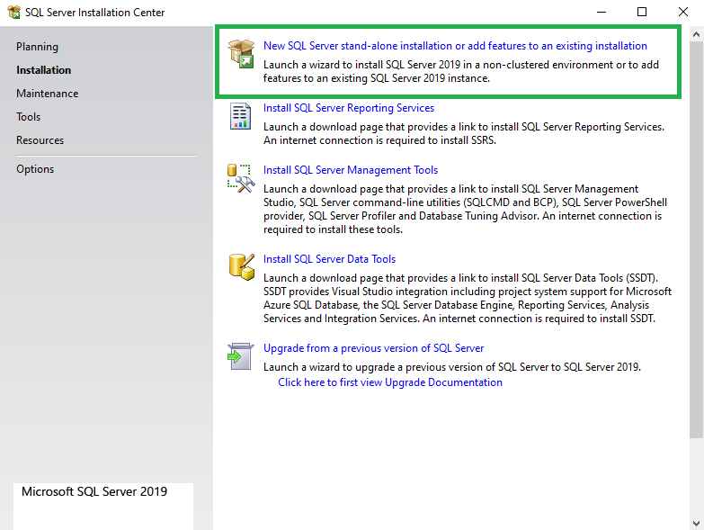
2.5 Licenszfeltételek // License terms
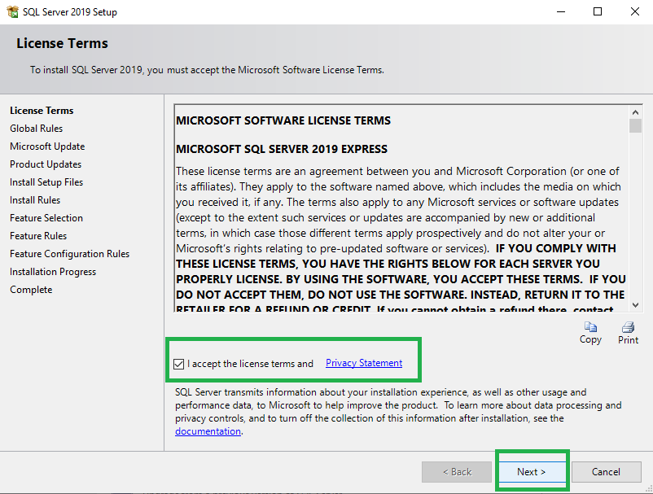
2.6 Frissítések // Updates
Megjegyzés: eleve a legfrissebb telepítőkészletet töltöttük le. // Note: an already up-to-date installation package was downloaded.
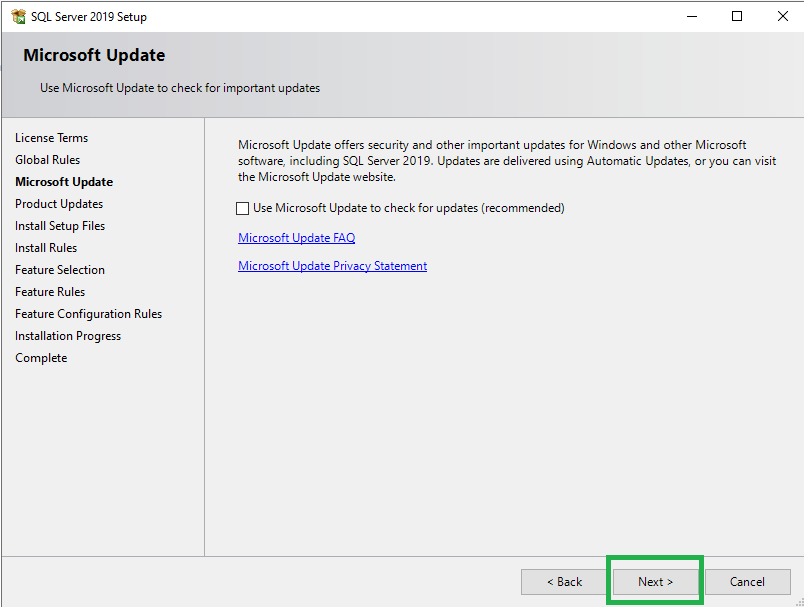
2.7 Telepítési szabályok ellenőrzése // Install rules
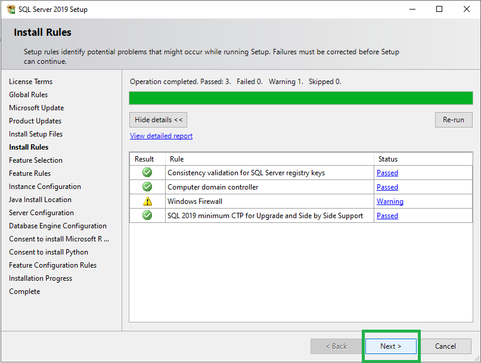
2.8 Telepítendő komponensek // Feature selection
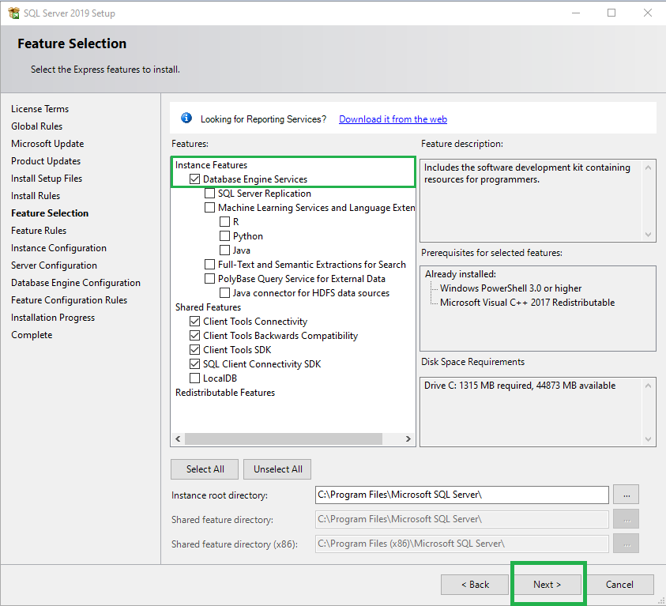
A komponensekről bővebben lásd: // Feature details: https://docs.microsoft.com/en-us/sql/sql-server/install/feature-selection?view=sql-server-2014&viewFallbackFrom=sql-server-ver15
2.9 Azonosító // Instance ID
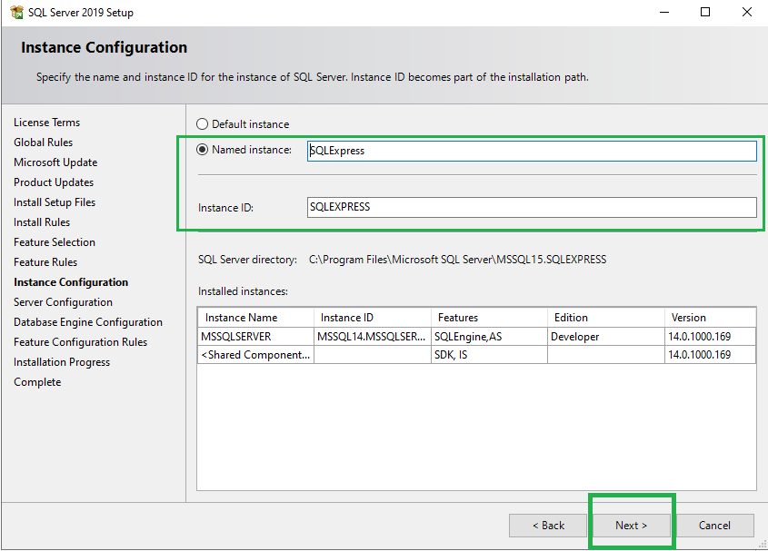
Megjegyzés: a képen látható telepítési környezetben már van más SQL Server kiadás telepítve, emiatt itt egyedi azonosítót használtunk. Más esetben az alapértelmezett azonosító is választható. // Note: the screenshot was taken with another SQL Server instance already installed, therefore a named instance was chosen. Otherwise using a default instance is acceptable.
2.10 Automatikus indítás // Automatic startup
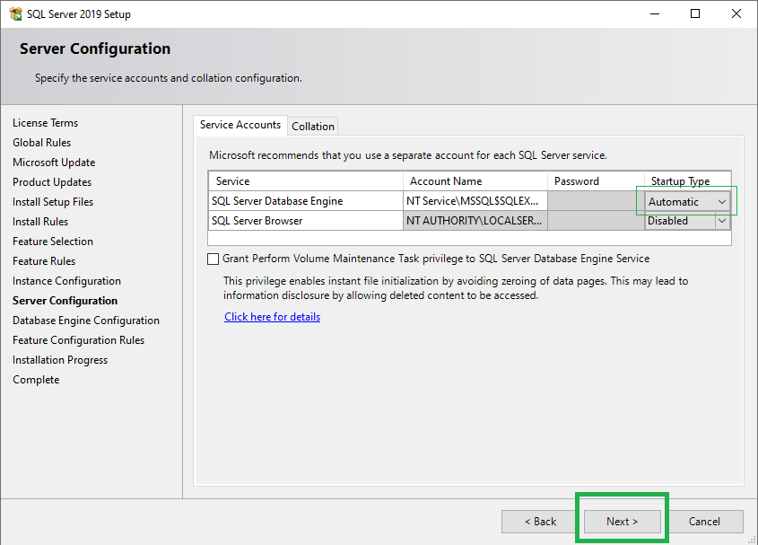
Megjegyzés: a szolgáltatás indítása kézi üzemmódra is állítható, és ez a beállítás később igény szerint megváltoztatható. // Note: the service startup type may be set to manual and changed later as needed.
2.11 Azonosítás // Authentication
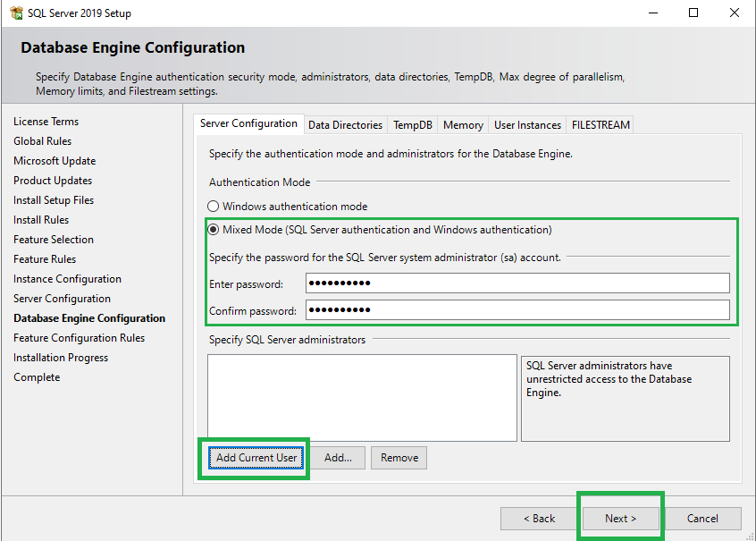
2.12 A telepítés befejeződött // Installation completed successfully
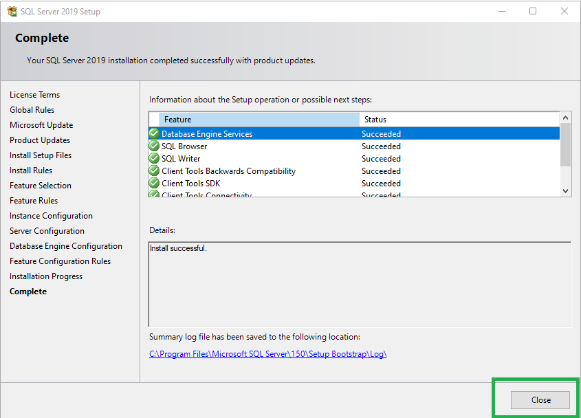
2.13 Kézi indítás // Manual startup
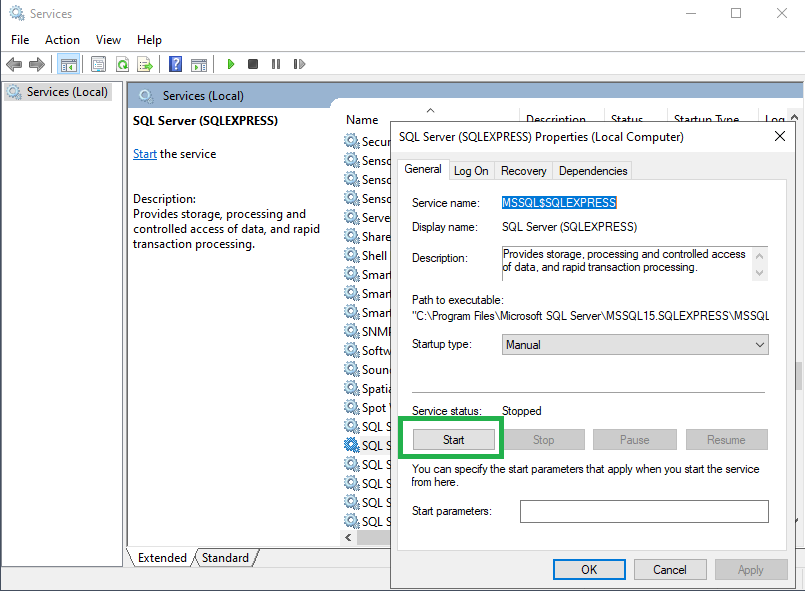 Megjegyzés: lásd a 2.10-es pont beállításait. // Note: see settings at section 2.10.
3. SQL Server Management Studio
A lokális gépen futó SQL szerver az Server Management Studio segítségével adminisztrálható.
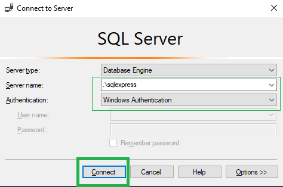
Kezdődhet az adatbázisok létrehozása és a táblák felépítése!
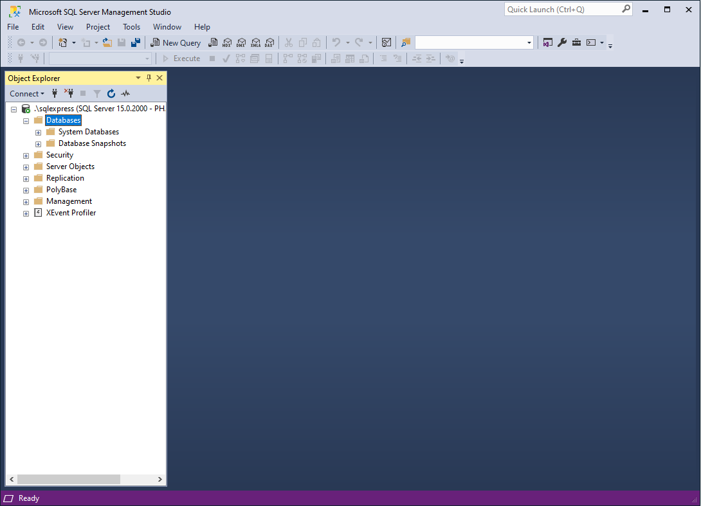